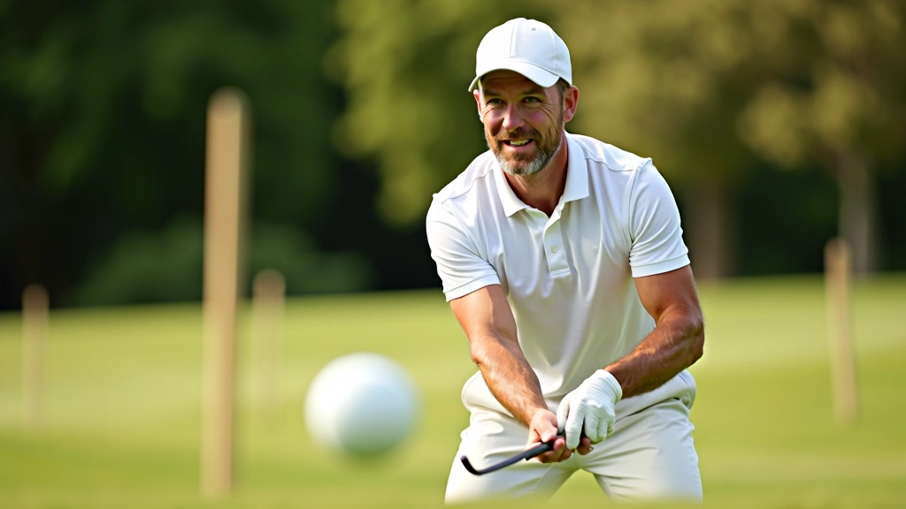
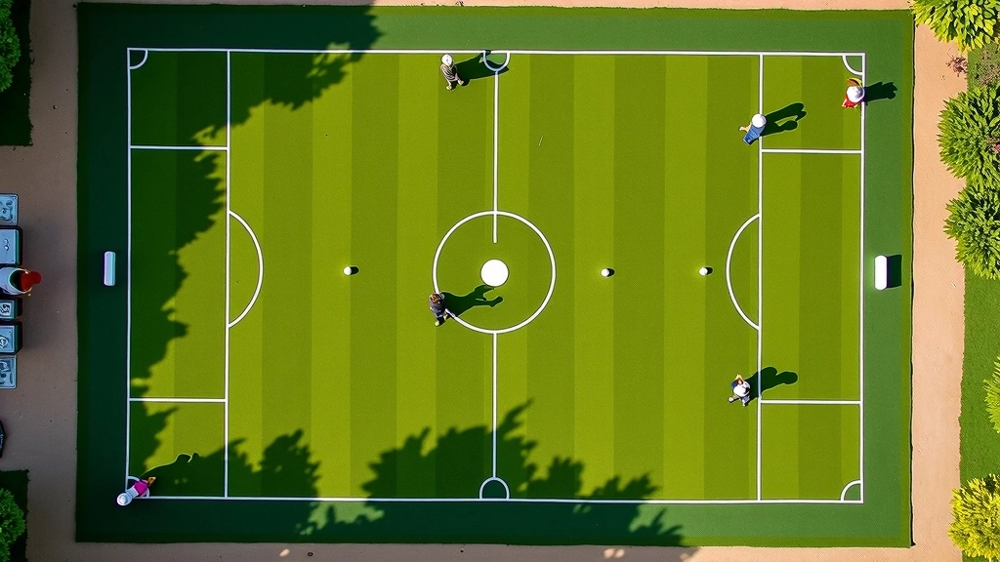
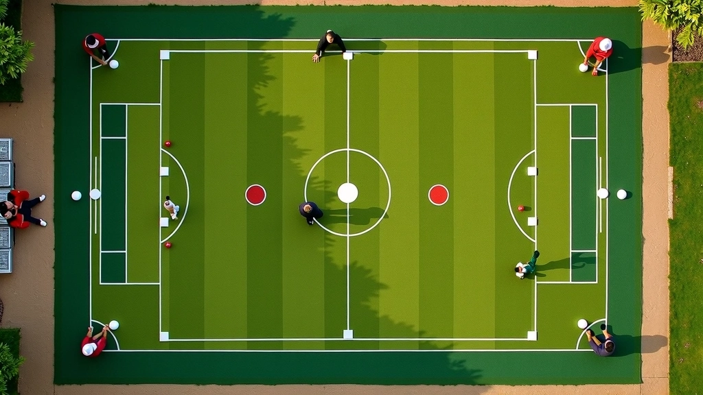

إتقان الضربة الأساسية: من البداية إلى الاحترافية
تعلم كيفية تنفيذ الضربة الأساسية بشكل صحيح. نغطي موضع القدمين، قبضة المضرب، والحركات الأساسية التي تبني أساس لعبة قوية.
اكتشف كيفية استخدام الكرة المركزية للسيطرة على اللعب. نشرح الحركات الاستراتيجية والمواضع الدفاعية التي تعطيك الأفضلية


فريق التحرير والمراجعة
كتبها فريق مركز النخبة للكروكيه، متخصصون في تقديم إرشادات عملية وسهلة التطبيق لتحسين مهارات الكرة المركزية.
الكرة المركزية هي أداة قوية في الكروكيه. إنها تتحكم في مسار اللعب وتحدد الخيارات المتاحة لخصومك. عندما تتحكم بموضع الكرة المركزية، فأنت تتحكم بالمباراة.
نحن لا نتحدث عن حظ أو مصادفة. هذه استراتيجية صرفة. اللاعبون الجيدون يعرفون أن الكرة المركزية ليست مجرد موضع — هي مفتاح السيطرة الكاملة. بإمكانك فرض الإيقاع، إجبار الخصم على حركات معينة، وفتح الطريق لنقاطك التالية.

هناك ثلاث حركات أساسية تحتاج إلى إتقانها. الأولى هي التموضع البسيط — وضع الكرة المركزية بين كرتك وهدفك. هذا يعطيك خيارات متعددة. الثانية هي الحركة الدفاعية حيث تضع الكرة المركزية بطريقة تقيد حركة خصمك.
الحركة الثالثة أصعب قليلاً — إنها الهجوم المنظم. تستخدم الكرة المركزية لتقريب نفسك من نقاط متعددة. معظم اللاعبين الجدد يركزون على ضرب الكرات بقوة. لكن اللاعبين المتقدمين؟ هم يضعون الكرات بذكاء. الفرق شاسع.
الكرة المركزية الجيدة توفر لك 3-4 خيارات للحركة التالية. إذا كان لديك خيار واحد فقط، فأنت لم تضعها في المكان الصحيح.

هذه المقالة توفر معلومات تعليمية عن تكتيكات الكروكيه. النصائح المقدمة هنا مبنية على أسس استراتيجية معروفة لكن تطبيقها يختلف من لاعب لآخر. نشجعك على الممارسة المنتظمة والتدريب مع لاعبين أكثر خبرة لتطوير مهاراتك.
الدقة هي كل شيء. لا يمكنك وضع الكرة المركزية "بشكل تقريبي". نحتاج إلى قياس المسافات بعناية. المسافة بين الكرة المركزية والكرات الأخرى تحدد كل شيء. إذا كانت بعيدة جداً، تفقد الفائدة. إذا كانت قريبة جداً، تخلق فرصة لخصمك.
اللاعبون المحترفون يستخدمون نقاط مرجعية على الملعب. هم يعرفون أن الكرة المركزية التي تبعد حوالي متر ونصف عن الهدف هي الأفضل. لكن هذا يتغير حسب موضع باقي الكرات. الممارسة اليومية تعطيك حدساً لهذه المسافات.
الكرة المركزية ليست للهجوم فقط. يمكنك استخدامها دفاعياً بفعالية. عندما يكون خصمك قريباً من هدف مهم، ضع الكرة المركزية بطريقة تجعل من الصعب عليه الوصول إليه. هذا يُعرف بـ "الحصار الاستراتيجي".
المتقدمون يتنقلون بين الدفاع والهجوم بسلاسة. يراقبون موضع الكرات طوال الوقت. إذا كان الخصم يقترب من نقطة حاسمة، ينتقلون فوراً إلى الموضع الدفاعي. إذا كانت لديهم الأفضلية، يهاجمون. هذا التوازن هو ما يميز اللاعبين الجيدين عن الممتازين.

النظرية مفيدة، لكن التطبيق هو ما يحسّن لعبتك. إليك تمارين يمكنك فعلها في أي ملعب
ضع الكرة المركزية بين كرتك والهدف. مارس هذا 20 مرة يومياً. ركز على المسافة الصحيحة. لا تتسرع.
ضع علامات على الملعب على مسافات مختلفة. ركز على ضرب الكرة المركزية لهذه العلامات بدقة. هذا يبني الحدس.
ضع الكرة المركزية بطريقة تحصر كرة خصمك. مارس هذا حتى تشعر براحة مع هذه الحركة الدفاعية.
ضع الكرة المركزية بسرعة ودقة متتالية. ابدأ ببطء، ثم زد السرعة مع الحفاظ على الدقة. هذا يطور الذاكرة العضلية.
السيطرة على الكرة المركزية تأتي من الممارسة والفهم. لا توجد اختصارات. اللاعبون الذين يتدربون بانتظام على هذه التكتيكات يرون تحسناً ملحوظاً في غضون 6-8 أسابيع. لا تتوقع تحسناً فوري، لكن التطور سيكون واضحاً.
ابدأ بالتمارين البسيطة. ركز على التموضع الدقيق قبل كل شيء آخر. ثم انتقل إلى الحركات الدفاعية والهجومية. مع الوقت، ستصبح هذه الحركات طبيعية. ستتحكم بالملعب بثقة. وهذا هو الهدف — أن تشعر بالسيطرة الكاملة عندما تلعب.
تعلم كيفية تنفيذ الضربة الأساسية بشكل صحيح. نغطي موضع القدمين، قبضة المضرب، والحركات الأساسية التي تبني أساس لعبة قوية.

أفضل اللاعبين يتدربون بانتظام. إليك خمس تمارين عملية يمكنك فعلها في أي ملعب لتحسين مهاراتك بشكل ملحوظ.

بعد إتقان الأساسيات، حان الوقت للحركات الصعبة. تعلم الضربات المنحنية والحسابات المعقدة التي تفصل الخبراء عن الجيدين.